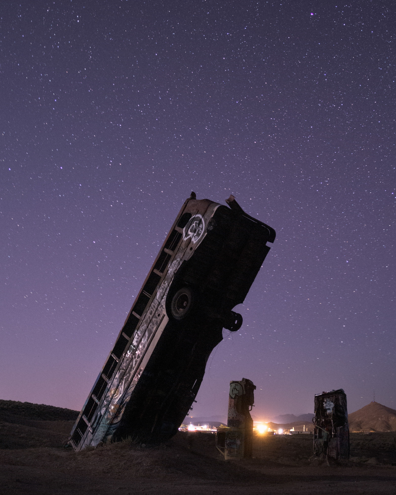
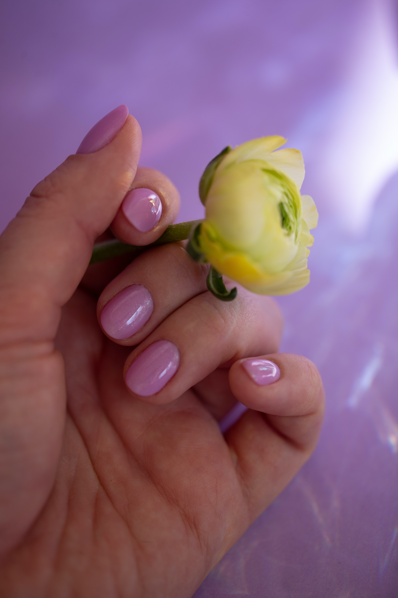
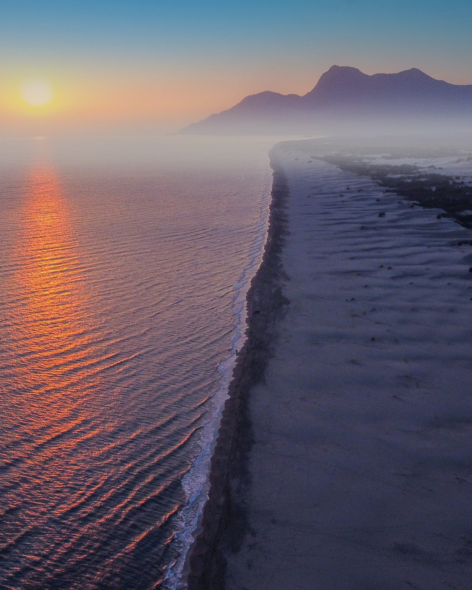
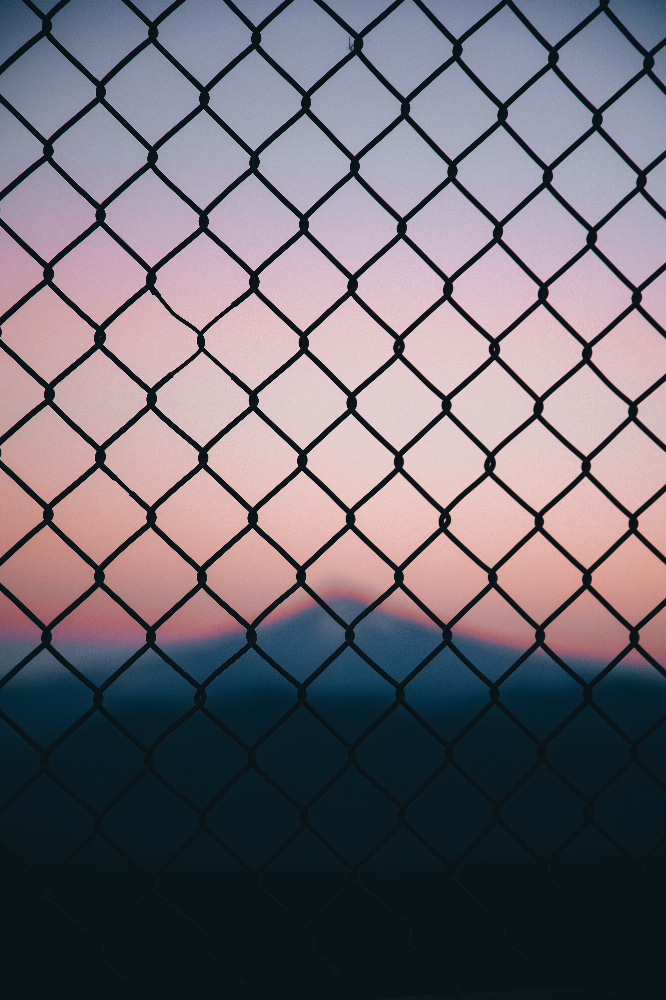
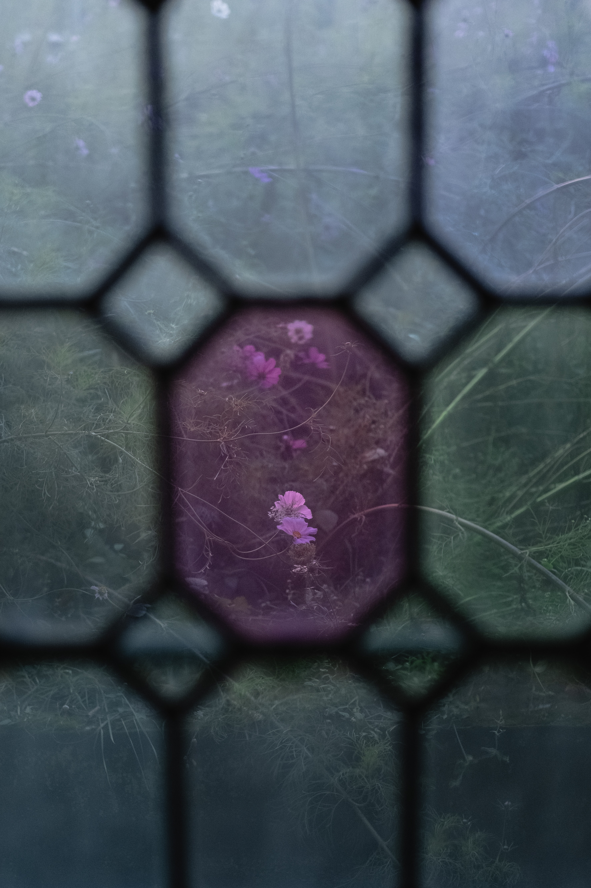

Pexels is a free stock image site that provides stock images with no strings attached or a few requirements. The site is suported by the community of artists and photographers who posts their photos for creative use. They can choose if they want their photos to be attributed, free to use, or liscenced. Often the photographers who post to this site can be suported through linked donation pages or their social media's.